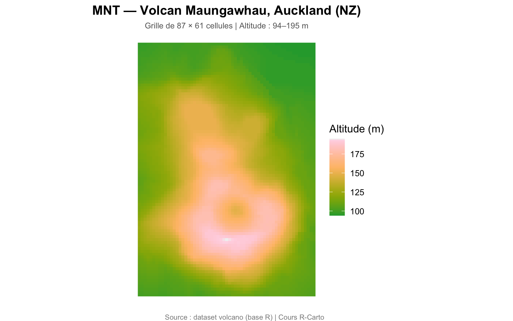
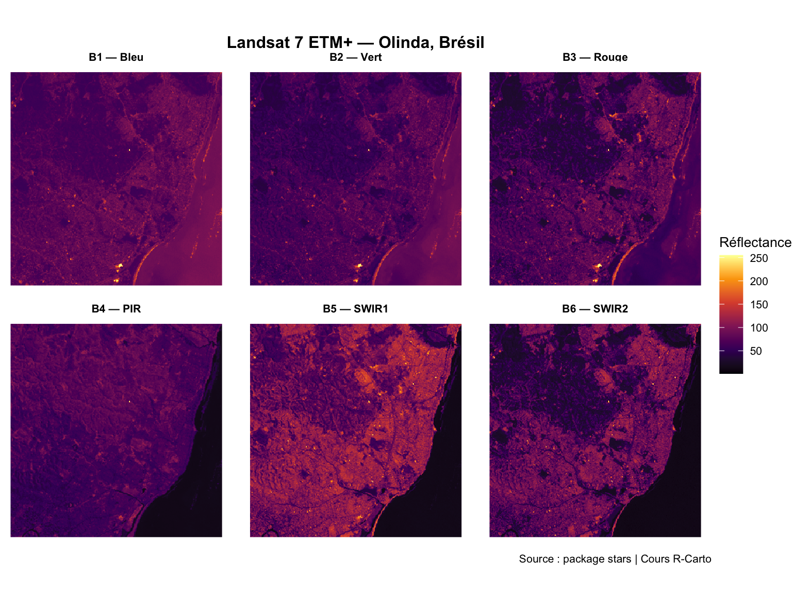
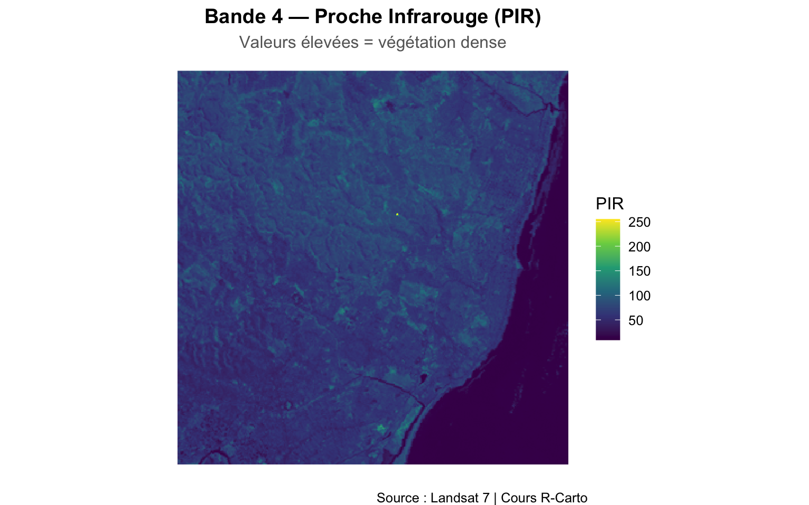

Code
library(sf)
library(ggplot2)
library(dplyr)
library(stars)
library(terra)
Jusqu’ici nous avons travaillé avec des données vectorielles : des points, des lignes et des polygones avec des frontières nettes. Mais de nombreux phénomènes géographiques — l’altitude, la température, la végétation, la pollution — sont continus dans l’espace et ne s’arrêtent pas aux frontières administratives.
C’est là qu’intervient le raster.
| Vecteur | Raster | |
|---|---|---|
| Structure | Points, lignes, polygones | Grille régulière de pixels |
| Adapté pour | Entités discrètes (communes, routes) | Phénomènes continus (altitude, T°) |
| Format de fichier | .shp, .gpkg, .geojson |
.tif, .img, .nc |
| Package R principal | sf |
terra, stars |
| Résolution | Exacte (coordonnées précises) | Dépend de la taille du pixel |
library(sf)
library(ggplot2)
library(dplyr)
library(stars)
library(terra)Un raster est une grille régulière de cellules (pixels), chacune portant une valeur numérique. C’est exactement la même structure qu’une photographie numérique — sauf que chaque pixel correspond à une zone précise sur la surface terrestre.
# Le dataset volcano (base R) est une matrice 87 x 61 d'altitudes
cat("Classe :", class(volcano), "\n")Classe : matrix array cat("Dimensions :", nrow(volcano), "lignes ×", ncol(volcano), "colonnes\n")Dimensions : 87 lignes × 61 colonnescat("Valeurs — aperçu des 3 premières lignes :\n")Valeurs — aperçu des 3 premières lignes :print(volcano[1:3, 1:5]) [,1] [,2] [,3] [,4] [,5]
[1,] 100 100 101 101 101
[2,] 101 101 102 102 102
[3,] 102 102 103 103 103# Convertir la matrice en data frame pour ggplot2
volcano_df <- expand.grid(x = 1:ncol(volcano), y = 1:nrow(volcano))
volcano_df$altitude <- as.vector(t(volcano))
ggplot(volcano_df, aes(x = x, y = y, fill = altitude)) +
geom_raster() +
scale_fill_gradientn(
colors = hcl.colors(50, "Terrain"),
name = "Altitude (m)"
) +
coord_equal() +
labs(
title = "MNT — Volcan Maungawhau, Auckland (NZ)",
subtitle = paste0("Grille de ", nrow(volcano), " × ", ncol(volcano),
" cellules | Altitude : ",
min(volcano), "–", max(volcano), " m"),
caption = "Source : dataset volcano (base R) | Cours R-Carto"
) +
theme_void(base_size = 12) +
theme(
plot.title = element_text(face = "bold", hjust = 0.5),
plot.subtitle = element_text(color = "grey40", hjust = 0.5, size = 9),
plot.caption = element_text(color = "grey55", size = 8)
)
Un raster est une grille régulière de pixels — chaque cellule couvre une zone précise sur la surface terrestre et contient une valeur numérique unique. C’est exactement la même structure qu’une photographie numérique, à ceci près que chaque pixel est géoréférencé.
Trois propriétés définissent tout raster géographique :
| Propriété | Description | Exemple |
|---|---|---|
| Emprise (extent) | Zone géographique couverte | xmin, xmax, ymin, ymax |
| Résolution spatiale | Taille d’un pixel au sol | 30 m × 30 m (Landsat) |
| SCR | Système de coordonnées de référence | WGS84, Lambert-93 |
Les valeurs peuvent représenter des phénomènes continus (altitude, température, intensité lumineuse) ou des variables catégorielles (type d’occupation du sol, classe de végétation).
Rasters à une bande (grayscale)
Le cas le plus simple : une seule bande où la valeur du pixel encode une magnitude. C’est le format des MNT, des données de luminosité nocturne, ou de la rétrodiffusion radar.
Les données de lumières nocturnes (nightlights) en sont un exemple parlant : chaque pixel représente la radiance ou la luminance artificielle mesurée depuis l’espace. Les zones sombres correspondent à une faible activité humaine ; les zones brillantes trahissent l’urbanisation, les axes routiers, les zones industrielles. Ces données servent à suivre l’étalement urbain, évaluer la pollution lumineuse, ou approcher l’activité économique dans des régions où les statistiques officielles sont lacunaires.
Modèles Numériques de Terrain (MNT)
Chaque pixel vaut l’altitude au-dessus du niveau de la mer à cet endroit. Les MNT sont la matière première de l’analyse topographique — ils servent à calculer la pente, l’exposition, la courbure, les bassins versants, les zones inondables, et bien d’autres indices. Le chapitre suivant, Relief du Liban, couvre ces opérations en détail et explique comment obtenir des données d’altitude pour n’importe quelle zone d’étude.
À partir d’un seul MNT, on peut calculer :
terrain(v = "slope")) — inclinaison du terrain en degrésterrain(v = "aspect")) — orientation des versants (N, S, E, O)Images multispectrales
L’œil humain perçoit trois bandes (rouge, vert, bleu). Les capteurs satellitaires capturent 4 à 12 bandes ou plus couvrant l’ensemble du spectre électromagnétique — du visible à l’infrarouge thermique. Chaque bande supplémentaire révèle quelque chose d’invisible à l’œil nu : santé de la végétation, humidité du sol, température de surface, composition minérale.
Le tableau ci-dessous détaille les bandes du satellite Landsat 8/9, l’archive la plus utilisée en télédétection open source :
| Bande | Nom | Longueur d’onde | Résolution | Utilisation principale |
|---|---|---|---|---|
| 1 | Ultra Bleu (Côtier/Aérosol) | 0,43–0,45 µm | 30 m | Eaux côtières, aérosols |
| 2 | Bleu | 0,45–0,51 µm | 30 m | Profondeur de l’eau, distinction sol/végétation |
| 3 | Vert | 0,53–0,59 µm | 30 m | Réflectance maximale de la végétation |
| 4 | Rouge | 0,64–0,67 µm | 30 m | Absorption de la chlorophylle |
| 5 | Proche Infrarouge (PIR) | 0,85–0,88 µm | 30 m | Biomasse, santé de la végétation |
| 6 | SWIR-1 | 1,57–1,65 µm | 30 m | Humidité du sol, neige vs nuages |
| 7 | SWIR-2 | 2,11–2,29 µm | 30 m | Géologie, minéralogie, cicatrices de feux |
| 8 | Panchromatique | 0,50–0,68 µm | 15 m | Haute résolution en niveaux de gris |
| 10–11 | Infrarouge Thermique | 10,6–12,5 µm | 100 m | Température de surface |
La combinaison des bandes 2, 3 et 4 donne une composition en vraies couleurs (ce que l’œil verrait depuis l’espace). L’ajout de la bande 5 (PIR) produit une fausse couleur où la végétation saine apparaît en rouge vif — très utilisée pour cartographier les couverts végétaux et mesurer des indices comme le NDVI.
La résolution spatiale définit la plus petite unité observable dans une image. Un pixel de 1 m permet de distinguer un bâtiment ; un pixel de 250 m ne révèle qu’un bloc urbain. Plus la résolution est fine, plus les fichiers sont volumineux et le calcul coûteux.
La résolution temporelle — fréquence de revisite du capteur — est tout aussi importante pour les analyses dynamiques : suivi d’une inondation, cycles de croissance des cultures, progression de la déforestation. Les deux dimensions sont souvent en tension : les capteurs à très haute résolution spatiale revisitent rarement, et vice versa.
Pour les sources spécifiques aux modèles d’altitude (NASA Earthdata, RGE ALTI® IGN, NextGIS, elevatr), voir Relief du Liban → Obtenir des données d’altitude.
stars — images satellitairesstars est conçu pour les données spatio-temporelles multidimensionnelles : images satellitaires multibandes, séries temporelles de rasters, données climatiques.
# Image Landsat 7 ETM+ — Olinda, Brésil
# 6 bandes spectrales : visible (B1-B3), proche infrarouge (B4), SWIR (B5-B6)
L7 <- read_stars(system.file("tif/L7_ETMs.tif", package = "stars"))
# Structure de l'objet
L7stars object with 3 dimensions and 1 attribute
attribute(s):
Min. 1st Qu. Median Mean 3rd Qu. Max.
L7_ETMs.tif 1 54 69 68.91242 86 255
dimension(s):
from to offset delta refsys point x/y
x 1 349 288776 28.5 SIRGAS 2000 / UTM zone 25S FALSE [x]
y 1 352 9120761 -28.5 SIRGAS 2000 / UTM zone 25S FALSE [y]
band 1 6 NA NA NA NA # Dimensions et attributs
dim(L7) # lignes × colonnes × bandes x y band
349 352 6 st_crs(L7)$srid # SCR[1] "EPSG:31985"st_bbox(L7) # emprise géographique xmin ymin xmax ymax
288776.3 9110728.8 298722.8 9120760.8 ggplot() +
geom_stars(data = L7) +
facet_wrap(
~band,
labeller = labeller(band = c("1" = "B1 — Bleu", "2" = "B2 — Vert",
"3" = "B3 — Rouge", "4" = "B4 — PIR",
"5" = "B5 — SWIR1", "6" = "B6 — SWIR2"))
) +
scale_fill_viridis_c(
option = "inferno",
name = "Réflectance",
na.value = "white"
) +
coord_equal() +
labs(
title = "Landsat 7 ETM+ — Olinda, Brésil",
caption = "Source : package stars | Cours R-Carto"
) +
theme_void(base_size = 10) +
theme(
plot.title = element_text(face = "bold", hjust = 0.5),
strip.text = element_text(face = "bold", size = 8)
)
L7_b4 <- L7[,,,4] # sélectionner la bande 4
ggplot() +
geom_stars(data = L7_b4) +
scale_fill_viridis_c(option = "viridis", name = "PIR", na.value = "white") +
coord_equal() +
labs(
title = "Bande 4 — Proche Infrarouge (PIR)",
subtitle = "Valeurs élevées = végétation dense",
caption = "Source : Landsat 7 | Cours R-Carto"
) +
theme_void(base_size = 12) +
theme(
plot.title = element_text(face = "bold", hjust = 0.5),
plot.subtitle = element_text(color = "grey40", hjust = 0.5)
)
terra — modèles numériques de terrainterra est optimisé pour les opérations rapides sur des rasters simples : modèles numériques de terrain (MNT), reclassification, algèbre raster.
spDataLarge
Les exemples terra ci-dessous utilisent le package spDataLarge qui contient des données plus volumineuses. À installer une fois en local :
install.packages("spDataLarge",
repos = "https://geocompr.r-universe.dev")library(spDataLarge)
# Modèle numérique d'élévation SRTM — Parc National de Zion, Utah (USA)
raster_filepath <- system.file("raster/srtm.tif", package = "spDataLarge")
srtm <- rast(raster_filepath)
# Informations essentielles
srtm # résumé complet
crs(srtm) # SCR
res(srtm) # résolution (en degrés ici)
ext(srtm) # emprise (xmin, xmax, ymin, ymax)
nlyr(srtm) # nombre de couches
global(srtm, "range") # min / max des valeurstidyterra + ggplot2library(tidyterra)
ggplot() +
geom_spatraster(data = srtm) +
scale_fill_gradientn(
colors = hcl.colors(50, "Terrain"),
name = "Altitude (m)",
na.value = "white"
) +
labs(
title = "MNT SRTM — Parc National de Zion (Utah)",
caption = "Source : spDataLarge | Cours R-Carto"
) +
theme_void(base_size = 12) +
theme(plot.title = element_text(face = "bold", hjust = 0.5))# Image Landsat multibande avec terra
multi_rast_file <- system.file("raster/landsat.tif", package = "spDataLarge")
multi_rast <- rast(multi_rast_file)
multi_rast # 4 couches (bandes)
nlyr(multi_rast) # nombre de couches
names(multi_rast) # noms des couchesLes rasters ont aussi un SCR. Les fonctions sont légèrement différentes de sf :
# Lire le SCR d'un raster terra
crs(srtm)
# Définir un SCR manquant (ne modifie pas les valeurs)
crs(srtm) <- "EPSG:4326"
# Reprojeter (réinterpolation des valeurs — plus coûteux qu'un vecteur)
srtm_lambert <- project(srtm, "EPSG:2154")Reprojeter un vecteur = transformer des coordonnées. Rapide, sans perte.
Reprojeter un raster = réinterpoler les valeurs de chaque cellule dans une nouvelle grille. Plus lent et peut introduire de légères imprécisions. Travaillez toujours dans le SCR natif le plus longtemps possible, et ne reprojetez qu’en dernier recours.
stars vs terra : lequel choisir ?| Situation | Package recommandé |
|---|---|
| Modèle numérique de terrain (MNT) | terra |
| Calculs raster rapides (reclassification, algèbre) | terra |
| Image satellitaire multibande | stars ou terra |
| Données spatio-temporelles (séries de rasters) | stars |
Intégration avec ggplot2 sans package extra |
stars (geom_stars()) |
Intégration avec ggplot2 via tidyterra |
terra (geom_spatraster()) |
En pratique, les deux packages interopèrent : st_as_stars(terra_obj) et rast(stars_obj) permettent de convertir facilement de l’un à l’autre.
En utilisant le data frame volcano_df créé dans ce chapitre :
mutate() et na_if() ou if_else())"YlOrRd" ou "RdBu" dans scale_fill_gradientn()volcano_df <- expand.grid(x = 1:ncol(volcano), y = 1:nrow(volcano))
volcano_df$altitude <- as.vector(t(volcano))
# 1. Statistiques
summary(volcano_df$altitude)
# 2. Filtrer les zones > 160 m
volcano_hautes <- volcano_df |>
mutate(altitude_filtre = if_else(altitude > 160, altitude, NA_real_))
ggplot(volcano_hautes, aes(x = x, y = y, fill = altitude_filtre)) +
geom_raster() +
scale_fill_gradientn(colors = hcl.colors(20, "..."), na.value = "grey90") +
coord_equal() +
theme_void()L’indice NDVI (Normalized Difference Vegetation Index) mesure la densité de végétation à partir des bandes rouge (B3) et proche infrarouge (B4) :
\[NDVI = \frac{PIR - Rouge}{PIR + Rouge} = \frac{B4 - B3}{B4 + B3}\]
Les valeurs vont de -1 (eau, sol nu) à +1 (végétation dense).
L7 <- read_stars(system.file("tif/L7_ETMs.tif", package = "stars"))
# Extraire bandes rouge (B3) et PIR (B4)
b3_rouge <- L7[,,,3]
b4_pir <- L7[,,,4]
# Calculer le NDVI
ndvi <- (b4_pir - b3_rouge) / (b4_pir + b3_rouge)
ggplot() +
geom_stars(data = ndvi) +
scale_fill_distiller(
palette = "RdYlGn",
direction = 1,
name = "NDVI",
limits = c(-1, 1),
na.value = "grey80"
) +
coord_equal() +
labs(
title = "NDVI — Indice de végétation",
subtitle = "Vert = végétation | Rouge = sol nu / eau",
caption = "Landsat 7 ETM+ — Olinda, Brésil"
) +
theme_void()← Précédent : Systèmes de Coordonnées de Référence → Suivant : Relief du Liban
Dr. Elisabetta Pietrostefani — Directrice Adjointe, Geographic Data Science Lab — Université de Liverpool | Co-Directrice, Imago : Data Service for Imagery | Chercheuse Associée, London School of Economics